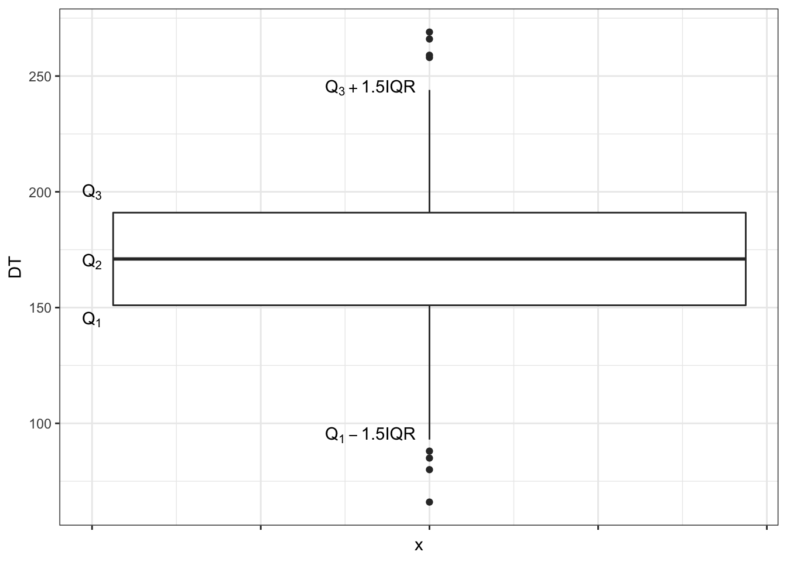
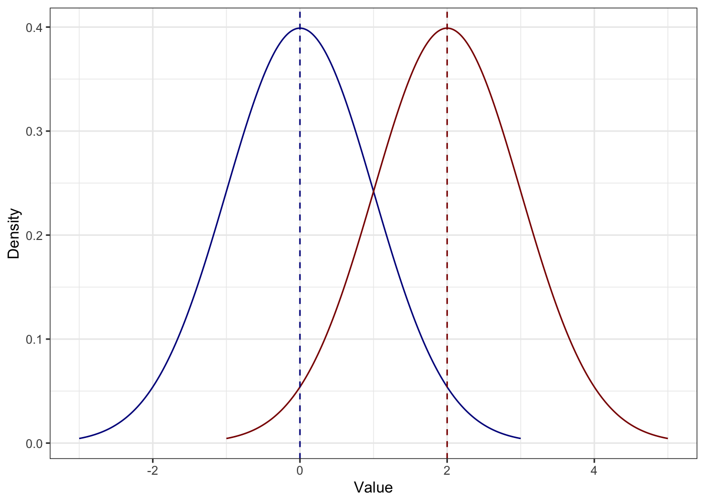

4 Меры разброса
Итак, мы разобрались с мерами центральной тенденции. Однако для описания распределения их оказвается недостаточно. Почему?
4.1 Зачем нужны меры разброса
Посмотрим на несколько распределений:
set.seed(123)
tibble(id = 1:100,
x1 = rnorm(100, mean = 2, sd = 1),
x2 = rnorm(100, mean = 2, sd = 3),
x3 = rnorm(100, mean = 2, sd = 0.5)) -> rnorm_threeМетодом пристального взгляда можно установить, что у всех распределений одинаковые средние:
Однако мы видим, что значения по-разному группируются вокруг среднего. Как они группируются — плотно, как на третьем рисунке, или не особо, как на втором — можно описать с помощью мер разброса, или мер вариативности.
4.1.1 Основные характеристики статистических данных
Вообще если посмотреть на это более свысока, то необходимость описания разброса определяется тем, что статистические данные обладают двумя ключевыми особенностями — неопределенностью и вариативностью.
- Неопределённость нам говорит о том, что мы не знаем, что именно мы получим в результате наших измерений для конкретной выборки. В том числе потому, что мы работаем на просторах случайных величин.
- Вариативность означает, что наши данные будут различатся ещё и от респондента к респонденту. И между выборками тоже. Здесь и ошибка измерения, и различные смешения и ещё куча всего.
Более того, вариативность настолько важна, что она входит в расчёт любого статистического критерия. Именно вариативность — а не центральная тенденция — позволяет нам сделать вывод о том, что наши выборки различаются (или нет).
4.2 Минимум, максимум, размах
Начнем с самого простого. Как наиболее просто описать вариативность? Мы работаем с выборкой, а в выборке, как известно, ограниченное число наблюдений. А если оно ограниченое, значит среди них точно есть наибольшее — максимальное — и наименьшее — минимальное.
Допустим, мы открыли ведомость по «Анатомии и физиологии ЦНС» некоторой академической группы и пронаблюли следующее:
anat_marks## [1] 7 4 6 9 10 5 6 9 6 6 3 6 8 8 5 10 7 5 7 3 9 4 8 3 8
## [26] 4 6 8 7 5Мы можем посчитать минимальное и максимальне значение по этому ряду наблюдений:
min(anat_marks)## [1] 3max(anat_marks)## [1] 10Получается, что оценки варьируются от \(3\) до \(10\). Ну, приемлемо. Разница между максимальным и минимальным значением называется размах (range):
\[ \mathrm{range}(X) = \max(X) - \min(X) \]
Правда вот функция range в R вернёт не само значение размаха, а минимальное и максимальное значение. Ну, ладно.
range(anat_marks)## [1] 3 10И вот мы преисполнившиеся идёт описывать вариативность переменной с помощью размаха, но обнаруживаем в другой ведомости этой же группы (по «Введению в психологию») вот что:
intro_psy_marks## [1] 6 8 4 6 7 5 7 10 4 6 7 8 7 6 8 10 8 7 7 6 8 7 6 8 6
## [26] 3 8 6 6 4Размах вроде как такой же:
range(intro_psy_marks)## [1] 3 10Значит ли это, что вариативность одинаковая?
Нарисуем.
Кажется, что вариативность различна. Распределение оценок по «Анатомии и физиологии ЦНС» более равномерное, в то время как оценки по «Введению в психологию» активнее группируются где-то в середине.
Штош, размах хоть и дает нам некоторую информацию о вариативности, нам этого маловато. Будем искать другие меры разброса.
4.3 Квантили
Возьмем распределение суммарного балла по шкале «Доверие к техническим интеллектуальным системам». Выглядит оно как-то так:
Теперь нам понадобится определение квантиля распределения.
Квантиль — это значение переменной, которое не превышается с определенной вероятностью (обозначим её \(p\)). Иначе говоря, слева от значения квантиля лежит \(p\%\) наблюдений.
Посмотрим на картинки.
Слева относительно квантиля-0.05 (\(x_{0.05}\)) лежит 5% наблюдений:
Слева относительно квантиля-0.68 (\(x_{0.68}\)) лежит 68% наблюдений:

Слева относительно квантиля-0.99 (\(x_{0.99}\)) лежит 99% наблюдений:
Итак, мы поняли, а также приняли и осознали, что такое квантиль. Неясно только, как он нам поможет описать вариативность данных.
4.3.1 Квартили
Для этого нам пригодятся специально обученные квантили. Оказалось достаточно удобно поделить все наблюдение на четыре равные части — вот так:
Значения переменной, которые делят выборку на четыре равные части называются квартили. Получается, что
- слева от первого (нижнего) квартиля (\(Q_1\), \(x_{0.25}\)) лежит 25% наблюдений
- слева от второго (среднего) квартиля (\(Q_2\), \(x_{0.50}\)) лежит 50% наблюдений
- а значит и справа 50% — получается второй квартиль делит выборку пополам — это медиана
- слева от третьего (верхнего) квартиля (\(Q_3\), \(x_{0.75}\)) лежит 75% наблюдений
Четвертый квартиль не используется, потому что это максимальное значение — слева от него лежит 100% наблюдений.
Кстати, можно также отметить, что первый квартиль — это медиана нижней (меньшей) половины наблюдений, а третий — медиана верней (большей) половины наблюдений.
Вот такая вот прикольная история.
4.3.2 Децили
К слову, делить выборку можно не только на четверти — можно поделить, скажем, на 10 частей и получить децили. Так, слева от первого дециля (\(x_{0.10}\)) лежит 10% наблюдений, а слева от третьего (\(x_{0.30}\)) — 30%.
Децили встречаются редко (в основном в психометрике), но знать о них полезно.
4.3.3 Перцентили
Гораздо чаще встречаются перцентили — значения переменной, которые делят выборку на 100 равных частей. Например, так устроен ваш рейтинг. Только стоит помнить, что в рейтинге отсчет ведется от максимального среднего балла, поэтому если у вас нулевой перцентиль (\(x_{0.00}\)) по программе, значит выше вас в рейтинге никого нет. А если ваш перцентиль, скажем, 36-ой (\(x_{0.36}\)), то выше вас в рейтинге 36% ваших однокурсников, то есть вы все ещё в первой половине рейтинга, что очень неплохо!
4.3.4 Интерквартильный размах
И — о, ура! — мы наконец-то добрались до того, ради чего тут собрались! Зная первый и третий квартили распределения, можно рассчитать интерквартильный (межквартильный) размах (interquartile range, IQR).
\[ \mathrm{IQR}(X) = Q_3(X) - Q_1(X) \]
Интерквартильный размах — это разница между третьим и первым квартилем распределения. Эта величина описывает интервал значений признака, в котором лежит 50% наблюдений.
В данном случае он равен 40:
IQR(taia$DT)## [1] 40То есть 50% наблюдений лежит в пределах 40 единиц шкалы.
4.3.5 Визуализация квартилей. Боксплот
Отображать квартили на гистограмме, во-первых, совершенно неудобно, а во-вторых, не то чтобы график получается информативный. Для визуализации квартилей придумали специальный тип графика — ящик с усами, или боксплот (boxplot).
Прикольная ерунда. Научимся его читать.
Значения переменной идут по вертикальной оси (оси ординат). По горизонтальной оси (оси абсцисс) здесь ничего не идет1. Жирная линия по середине ящика — медиана (второй квартиль). Нижняя граница ящика — первый квартиль, верхняя — третий. Получается, что границы ящика показывают нам значения, в пределах которых лежит половина наблюдений.
Нижний ус — первый квартиль минус полтора межквартильных размаха. Верхний ус — третий квартиль плюс полтора мехквартильных размаха.

Замечание
Ящик может быть асимметричным — то есть верхняя его часть (расстояние между медианой и третьим квартилем) и нижняя его часть (расстояние между медианой и первым квартилем) могут быть разными. Это нам говорит об асимметричности распределения. Усы также могут быть неравными, если один из них упирается в максимум / минимум — тоже по причине асимметричности распределения.Ну, допустим. А что тогда точки?
4.3.5.1 Выбросы
Вообще справедливо было бы задаться вопросом, а зачем нам вообще усы на этом графике? И почему мы прибавляем полтора межквартильных размаха?
Это один из подходов к определению нехарактерных значений — выбросов. При исследовании данных мы часто задаемся вопросом, если ли в наших данных такие значения, которые сильно отличаются от распределения той или иной переменной. Но как определить это самое «сильно»?
Вот один из подходов. Будем считать, что значения, которые укладываются в интервал \((Q_1 - 1.5 \times \mathrm{IQR}, \, Q_3 + 1.5 \times \mathrm{IQR})\), нас устраивают. Все что попадает в этот интервал — это «нормальные», типичные значения нашей переменной. Те же, которые будут находиться за пределами этого интервала, мы назовем нетипичными, аномальными значениями, или выбросами. Эти значения и будут отмечены точками на графике boxplot.
Что с ними делать? Во-первых, содержательной анализировать. Выбросы могут возникнуть по разным причинам. Может быть испытуемый отвлекся на прилетевшего в окно голубя, и у нас в данных появилось время реакции 200 секунд. Такие выбросы мы можем исключить из данных. А возможно в нашу выборку попали какие-то люди, которые, скажем, очень сильно или очень слабо доверяют искусственному интеллекту (как в примере на рисунке). Эти наблюдения необходимо дополнительно проанализировать — возможно, это представители специфических групп нашей генеральной совокупности (например, программисты-разработчики или люди пенсионного возраста). Анализ принесет нам дополнительную информацию, которую мы могли не учесть при планировании исследования. Крч, думать надо. И собирать побольше данных, чтобы можно было найти содержательную интерпретацию происходящему.
4.4 Дисперсия
Хотя описание разброса переменных с помощью квантилей (в частности, квартилей) может дать нам много полезной информации, все же у них есть существенный недостаток: они никак не взаимодействуют с самими значениями нашей переменной.
Действительно, мы делим нашу сортированную выборку на равные части, и смотрим, что в эти части попало. Но хотелось бы как-то учесть ещё и сами значения переменной в некотрой числовой мере разброса.
Ну, хорошо. Поступим следующим образом. Мы все ещё хотим узнать, как наши значения группируются вокруг среднего. В предыдущей главе мы уже видели, что наши наблюдения отклоняются от среднего значения — значит мы можем посчитать отклонение для каждого наблюдения:
\[ \bar x - x_i \]
Окей. Если мы сложим все отклоненияи и поделим на их количество (которое равно количеству наблюдений), то мы получим среднее отклонение, да?
\[ \frac{1}{n} \sum_{i=1}^n \bar x - x_i \]
Да. Однако есть одна проблема. В прошлой главе мы выяснили, что сумма отклонений от среднего равна нулю, а значит и среднее отклонение также будет равно нулю.
Хорошо. Но отрицательные значения ведь можно победить! Есть два пути:
- Модуль. Преимущество первого в том, что размерность величины разброса остается той же, что и у измеряемой переменной.
- Квадрат. Преимущество второго в том, что сильные отклонения будут оказывать более сильное влияние на окончательное значение статистики, в то время как для первого малые и большие отклонения равноценны.
Второй путь на практике оказывается полезнее, так как мы хотим, чтобы сильно отличающиеся наблюдения вносили вклад в меру разброса.
Возведя отклонения в квадрат, получим формулу дисперсии (вариации, variation):
\[ D(X) = \mathrm{var}(X) = \sigma^2 = \frac{1}{n} \sum_{i=1}^n (\bar x - x_i)^2 \]
Гениально.
Не совсем. Формула, которую мы получили, пригодна для расчета дисперсии генеральной совокупности — на выборке же она будет давать неточную оценку.
Чтобы получить точную (несмещенную) оценку дисперсии по выборке, нам нужно исправить знаменатель дроби — вместо \(n\) использовать \(n-1\):
\[ s^2 = \frac{1}{n-1} \sum_{i=1}^n (\bar x - x_i)^2 \]
Но почему?
4.4.1 Степени свободы
Во всём виновата выборка.
Взглянем на формулу дисперсии: в неё входит среднее арифметическое. То есть для того, чтобы рассчитать дисперсию на выборке, сначала нам необходимо на этой же выборке рассчитать среднее. Тем самым, мы как бы «фиксируем» нашу выборку этим средним значением — у значений нашего распределения становится меньше свободы для варьирования. Теперь свободно варьироваться могут \(n-1\) наблюдение, так как последнее всегда будет возможно высчитать, исходя из среднего значения. По этой причине нам необходимо корректировать исходную формулу расчета дисперсии.
А что если не корректировать?
Мы стремимся к тому, чтобы наши расчеты на выборке достаточно точно [на столько, на сколько это возможно] отражали то, что происходит в генеральной совокупности. Математики-статистики выяснили, что та оценка, которая хорошо подходит для расчета дисперсии генеральной совокупности, при применении на выборке даёт смещенные оценки. То есть оценка выборочной дисперсии по формуле дисперсии для генеральной совокупности содержит в себе смещение — некоторую систематическую ошибку. Это нехорошо.
К концепту степеней свободы мы ещё неоднократно вернемся. Сейчас хотелось бы, чтобы сформировалось какое-то минимальное более-менее освязаемое понимание того, почему они вообще нам нужны. Если на основе предыдущих абзацев раздела этого сделать не получилось, то давайте попробуеи воспользоваться следующим рассуждением.
На выборке происходят некоторые статистические преколы, которые несколько портят нам жизнь, и нам их неободимо учесть, чтобы адекватно оценивать то, что происходит в генеральной совокупности. В частности, нам необходимо учитывать количество степеней свободы, которое есть в нашей выборке. Для расчета выборочной дисперсии оно равно \(n-1\), так как мы для того, чтобы рассчитать дисперсию по выборке, нам сначала по той же самой выборке надо рассчитать ещё одну оценку — среднее арифметическое. Этот расчет заберет одну степень свободы у нашей выборки.
4.5 Стандартное отклонение
И вот мы получили невероятное! У нас есть формула расчета меры разброса, которая позволяет учесть сами значения переменной! Ну не чудо ли!
Чудо, конечно, однако есть некоторая проблема. Мы возводили отклонения в квадрат. Представим, что мы хотим посчитатить дисперсию роста студентов психфака. Пусть мы измеряли рост в метрах. Отклонения тоже будут в метрах (потому что среднее — это тоже метры, а если из метров вычитать метры, то мы получим метры). А при возведении метров в квадрат получаются метры в квадрате. Очевидно, что если мы модели квадратные метры на некоторое число (\(n\)), они все еще останутся метрами в квадрате.
О, нет! А счастье было так близко, так возможно! Получается, мы не можем интерпретировать эту меру разброса? Не сможем даже нарисовать?
Да, но это не очень большая беда. Для того, чтобы вернуться обратно к единицам измерения нашей переменной, нам всего лишь нужно извлечь корень из дисперсии:
\[ \sigma = \sqrt{\sigma^2} = \sqrt{\frac{1}{n} \sum_{i=1}^n (\bar x - x_i)^2} \]
Мы получили величину, называемую стандартным отклонением (standard deviation). Чем она хороша? Тем, что её размерность совпадает с размерностью нашей переменной. Стандартное отклонение уже может быть достаточно интерпретабельно и хорошо визуализируемо.
Кстати, формула выше, которая что-то очень напоминает, — это стандартное отклонение генеральной совокупности, потому что под корнем стоит дисперсия генеральной совокупности.
Чтобы посчитать стандартное отклонение по выборке, нам надо извлечь корень из выборочной дисперсии:
\[ s = \sqrt{s^2} = \sqrt{\frac{1}{n-1} \sum_{i=1}^n (\bar x - x_i)^2} \]
4.6 Сравнение мер разброса
Как и разные меры центральной тенденции, разные меры разброса по-своему хороши. Более того, они дружат с мерами центральной тенденции. Так, с медианой используется мехквартильных размах, а со средним арифметическим — стандартное отклонение.
Размах подходит для всего сразу. Его стоит рассчитать, чтобы составить самое первое представление в разбросе, о границах измерения изучаемого признака [на нашей выборке].
Стоит также отметить, что все, что мы тут обсуждали, совершенно не годиться для номинативных переменных. Однако у них тоже есть вариативность. Согласитель, что выборка из Питера, Москвы, и Казани более вариативна, чем выборка из Москвы. Аналогом меры разброса для номинальной переменной можно назвать количество уникальных значений этой переменной.
4.7 Свойства дисперсии и стандартного отклонения
- Если к каждому значению распределения прибавить некоторое число (константу), то дисперсия не изменится.
\[ D_{x+c} = D_{x} \]
Вот почему:
\[ D_{x+c} = \frac{\sum_{i=1}^n \big((\bar x + c) - (x_i + c)\big)^2}{n-1} = \frac{\sum_{i=1}^n \big(\bar x + c - x_i - c\big)^2}{n-1} = \frac{\sum_{i=1}^n \big(\bar x - x_i\big)^2}{n-1} = D_x \]
- Если каждое значение распределение умножить на некоторое число (константу), то дисперсия увеличится в \(c^2\) раз.
\[ D_{x \times c} = D_{x} \times c^2 \]
Вот почему:
\[ D_{x \times c} = \frac{\sum_{i=1}^n (c\bar x - cx_i)^2}{n-1} = \frac{\sum_{i=1}^n c^2(\bar x - x_i)^2}{n-1} = \frac{c^2 \sum_{i=1}^n (\bar x - x_i)^2}{n-1} = D_x \times c^2 \]
- Если к каждому значению распределения прибавить некоторое число (константу), то стандартное отклонение не изменится.
\[ s_{x+c} = s_x \]
Это следует из свойства дисперсии:
\[ s_{x+c} = \sqrt{D_{x+c}} = \sqrt{D_x} = s_x \]
Как мы уже видели, распределение просто сдвигается на константу. Например, если к каждому значению синего распределения прибавить \(2\), получится красное — разброс у обоих распределений одинаковый:

- Если каждое значение распределение умножить на некоторое число (константу), то стандартное отклонение увеличится во столько же раз.
\[ s_{x \times c} = s_x \times c \]
Это также следует из свойства дисперсии:
\[ s_{x \times c} = \sqrt{D_{x \times c}} = \sqrt{D_x \times c^2} = s_x \times c \]
Например, здесь каждое значение синего распределения умножили на \(3\) и получили красное — разброс также увеличился в три раза, поэтому распределение более плоское:

Но если мы рисуем несколько боксплотов рядом, то на оси
xбудет категориальная переменная.↩︎